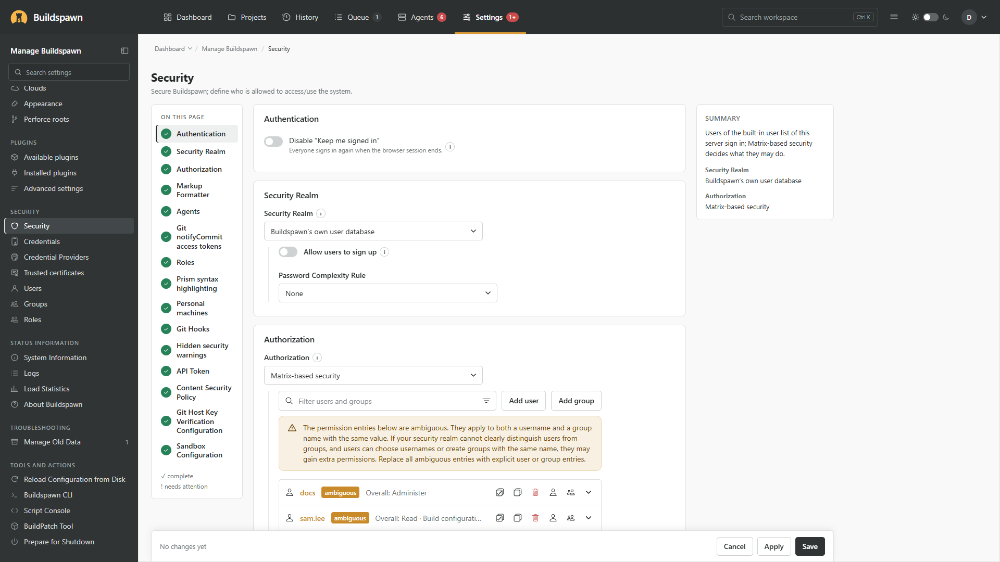

Security settings
One page, Settings › Security, holds the sign-in, permission, agent and protection settings of the whole server.
When to use it
Open it when you set up the server, when you change how people sign in, and when you want to tighten the server (API tokens, Git hooks, content policy). You need Administer to change it. People with System read can look at it but not save.
How to set it up
- Click Settings in the top bar, then Security.
- Use the list of sections on the left (Jump to section) to move down the page.
- Change the settings you need (below).
- Click Save, or Apply to stay on the page. The bar with both buttons stays at the bottom of the window.

The card Summary on the right says in one line who can sign in and what decides what they may do. For example: Users of the built-in user list of this server sign in; Project-based security decides what they may do. It names the realm and the strategy.
Every section
Authentication
| Field | What it does | Default |
|---|---|---|
| Disable “Keep me signed in” | Removes the checkbox from the sign-in page. Everyone signs in again when the browser session ends. | Off |
Security Realm
Where users come from. The fields depend on the choice. See Security realms, Entra ID sign-in and SAML sign-in. With Buildspawn’s own user database you also see Allow users to sign up and Password Complexity Rule.
Authorization
What people may do. The permission cards and the strategies are explained on Authorization.
Markup Formatter
| Field | What it does | Default |
|---|---|---|
| Markup Formatter | Decides how descriptions of projects, build configurations, views, builds and users are shown. Plain text shows them as written, with line breaks kept. Safe HTML allows a safe set of HTML tags. | Plain text |
Descriptions can be set by people you do not expect: any signed-in user can set their own, and build steps can set a build’s description. A formatter that shows HTML as it is would allow cross-site scripting (a page that runs someone’s script in your browser). Keep Plain text unless you trust everyone who can write descriptions.
Agents
| Field | What it does | Default | Example |
|---|---|---|---|
| TCP port for inbound agents | The port that agents which connect to the server use. Disable turns it off, which is best if you use no inbound agents. Random lets the server choose a port at start, which never clashes with other programs. Fixed takes a port number, so you can open exactly that port in your firewall. | Disable | Fixed, 50000 |
If the server was started with a system property that sets the port, the field is replaced by a line like enforced to 50000 on startup through system property. See Agent settings for the agent protocols.
Git notifyCommit access tokens
Tokens that protect the address Git servers call to tell Buildspawn about a new commit (notifyCommit). Every such call must carry a valid token in the token query parameter.
| Part | What it does |
|---|---|
| Current access tokens | The list. It says There are no access tokens yet. when empty. Revoke removes one. |
| Generate | Makes a new token from a name. It is shown only once, so copy it. Cancel closes the box. |
Roles
A note that explains how the Roles tab relates to the permission cards, with a link Open the roles of Root. See Roles.
Prism syntax highlighting
| Field | What it does | Default |
|---|---|---|
| Permitted Source Code Directories | Some tools copy source files next to build results (coverage, warnings) so the page can show them. Files outside the build’s workspace are hidden unless their folder is listed here. Give an Absolute path of permitted directory on the agent, and click Add. Delete removes a row. | Empty |
| Show source code only to people with the Workspace permission | Only people who may browse a workspace can see these source files. | Off |
Personal machines
| Field | What it does | Default |
|---|---|---|
| Allow personal machines | People can connect their own computer and run their own builds on it. Who may add one is set by the UsePersonal permission under Agent. | Off |
| Offline machine: cancel waiting builds after … minutes | A build waits for its owner’s machine only. After this time it is cancelled, and says why. | 30 |
See Personal agents.
Git Hooks
| Field | What it does | Default |
|---|---|---|
| Allow on Controller (Allow git hooks to run on the Buildspawn controller) | Git hooks are scripts that Git runs on events like a checkout. Leave this off. A hook that a build step or a mistake placed in a repository on the server would run with the server’s rights. | Off |
| Allow on Agents (Allow git hooks to run on Buildspawn agents) | The same for agents. Most repositories need no hooks. Leave it off. | Off |
Hidden security warnings
| Field | What it does |
|---|---|
| Security warnings | A list of the warnings, published by the update sites, that apply to what you have installed. Ticked warnings (the default) are shown in the plugin pages and in a notice. Untick a warning to hide it, for example when you checked that it does not apply to you. You cannot hide all warnings about one component at once. |
API Token
| Field | What it does | Default |
|---|---|---|
| Generate a legacy API token for each newly created user (Not recommended) | Makes an old-style token, with no expiry, for every new user. People should make normal tokens on their own page instead. | Off |
| Allow users to manually create a legacy API token (Not recommended) | Lets a user make an old-style token if they have none. Turn it off to keep only the new kind. | Off |
| Enable API Token usage statistics | Keeps the date of the last use and a use count for each token, so people can see which tokens are unused and revoke them. The data stays on the server. | On |
See API tokens.
Content Security Policy
A content security policy is a header that tells the browser which scripts and styles a page may load. It stops injected scripts from running.
| Field | What it does | Default |
|---|---|---|
| Enforce Content Security Policy | When ticked, the server sends Content-Security-Policy, and browsers block what the policy forbids. When not ticked, it sends Content-Security-Policy-Report-Only: browsers only report problems and block nothing. | Off |
| Advanced | More rules, when some are available. | — |
If a system property or a development mode controls the header, the section shows a message about it and no checkbox.
Git Host Key Verification Configuration
| Field | What it does | Default |
|---|---|---|
| Host Key Verification Strategy | How Git checks the key of an SSH server it connects to.
Known hosts file: checks against the known_hosts file.
Accept first connection: adds a new host’s key the first time and refuses a changed key afterwards. On agents that are created fresh each time, this is like no check. Manually provided keys: checks against a list of keys you enter here. No verification: does not check. Not recommended. | Known hosts file |
Sandbox Configuration
| Field | What it does | Default |
|---|---|---|
| Force the use of the sandbox globally in the system | Hides the option Use Groovy Sandbox from people who are not administrators, so all Groovy scripts must run in the sandbox. Use it in a tightly controlled server, where arbitrary code is never approved. | Off |
Sections that appear only sometimes
| Section | When it appears | What it does |
|---|---|---|
| CSRF Protection | Only if a system property turned the protection off, or another crumb issuer is installed. | CSRF (cross-site request forgery) is an attack where another web page makes your browser send a request to the server as you. With protection on, every change request must carry a one-time value (a crumb). It is on by default. If it was turned off, the section says so and calls that setting unsupported. |
| Access Control for Builds | Only if a plugin supplies a build authenticator. | Lets you choose which user builds run as. |
Other security pages
| Page | What it does |
|---|---|
| Settings › Users, Groups, Roles | See Users and groups and Roles. |
| Settings › Trusted certificates | See Trusted certificates. |
Settings › In-process Script Approval (/manage/scriptApproval/) | Groovy scripts, method signatures and classpath entries that run outside the sandbox wait here until an administrator approves them. The page has sections Scripts, Signatures (with already approved lists) and Classpath entries, each with a button to clear earlier approvals. Be careful with remote addresses and workspace files in a classpath, because they can change without notice. |
| Settings › miniOrange SAML SSO | See SAML sign-in. |
| Settings › System | Other protective settings, such as the resource root URL and the filters for environment variables, are on System settings. |
A worked example
An administrator hardens a new server. She sets TCP port for inbound agents to Fixed 50000 and opens that port to the agent network. She leaves both Git Hooks switches off, turns off the two legacy API token options, ticks Enforce Content Security Policy, and keeps Markup Formatter on Plain text. Then she clicks Save.
What you see when it runs
- The page reloads with a short confirmation and the Summary card up to date.
- Agents that connect inbound use the port you set.
- With the policy enforced, a browser console may show blocked requests from custom page scripts. If a plugin page breaks, untick it and look at the reports first.
Problems and fixes
| Problem | What to do |
|---|---|
| You cannot save: the buttons are missing. | You only have System read. Ask an administrator. |
| Agents cannot connect after you disabled the port. | Inbound agents need a port. Choose Fixed or Random, or use agents that the server connects to. |
| A plugin page looks broken after you enforced the policy. | Switch to reporting only (untick) and read the browser’s reports to find what is blocked. |
| A webhook from your Git server returns an error. | It needs a valid token in the token parameter. Generate one under Git notifyCommit access tokens. |